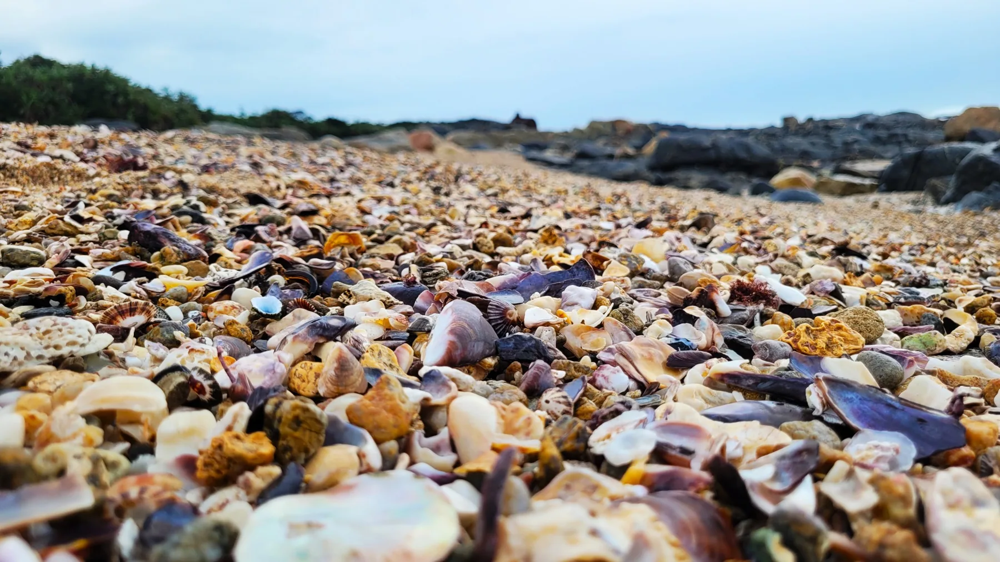
Shelly Beach
Explore the coastline and its fascinating shells.
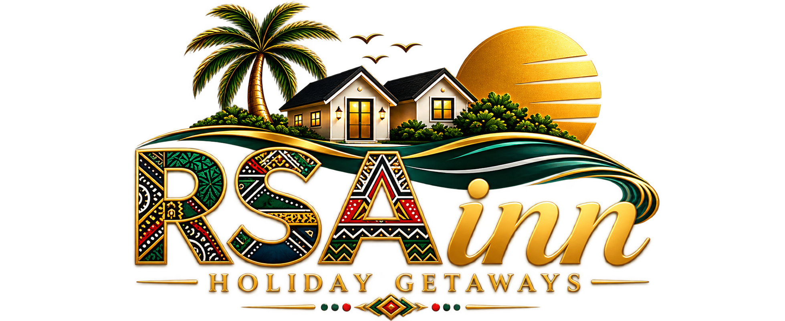
YOUR HOME BY THE OCEAN
A comfortable, family-friendly self-catering getaway in the heart of Uvongo on the beautiful KwaZulu-Natal South Coast.
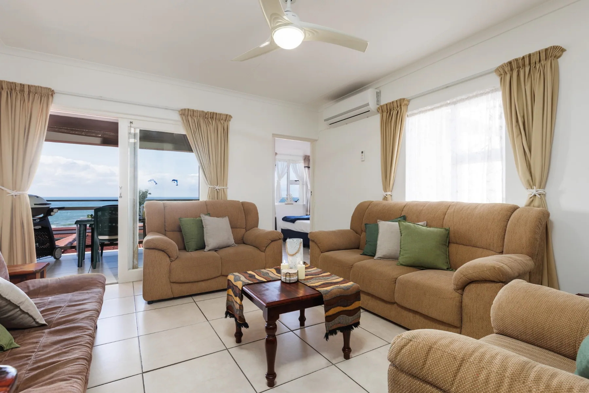
UVONGO · SOUTH COAST
Enjoy two bedrooms, two bathrooms, a fully equipped kitchen, Wi-Fi, a private balcony with sea views and a gas braai. Relax by the communal pool or explore the nearby beach.
EVERYTHING YOU NEED
THE COAST IS CALLING
From golden beaches to dramatic coastal scenery, explore the beauty of KwaZulu-Natal’s South Coast.
OUR FEATURED DESTINATION
Discover the lagoon, waterfall and seaside atmosphere that make Uvongo a favourite South Coast destination.
FIND YOUR FAVOURITE SHORE
Each stretch of coastline has its own character. Explore these favourites during your stay.

Explore the coastline and its fascinating shells.
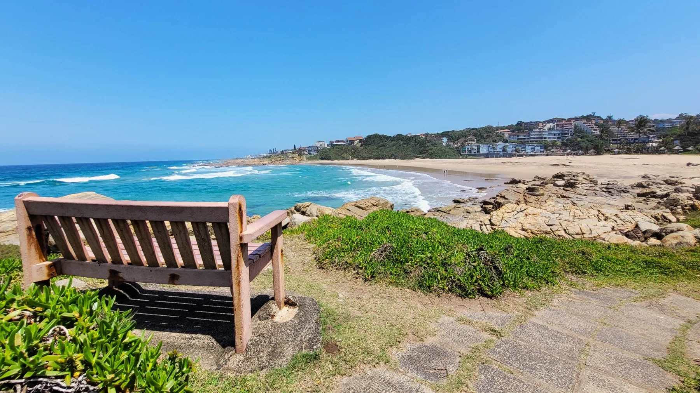
Relax with sweeping views of the ocean.
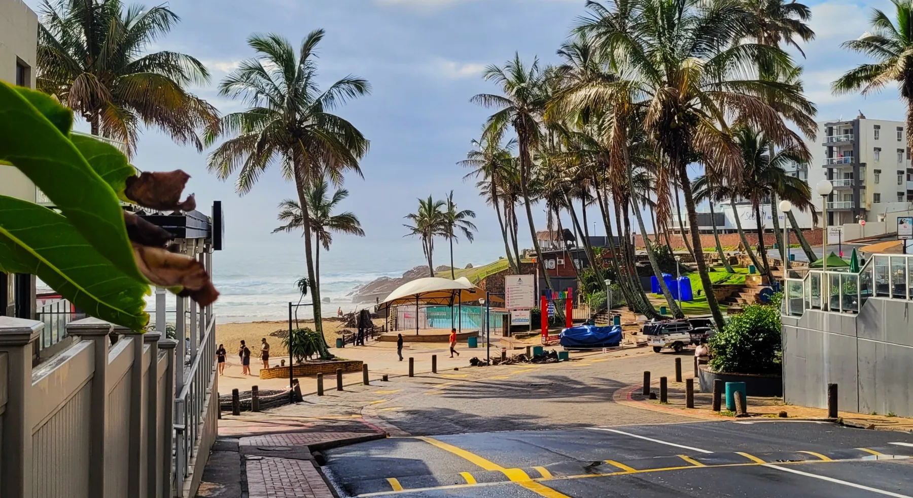
A lively seaside destination with a classic holiday atmosphere.
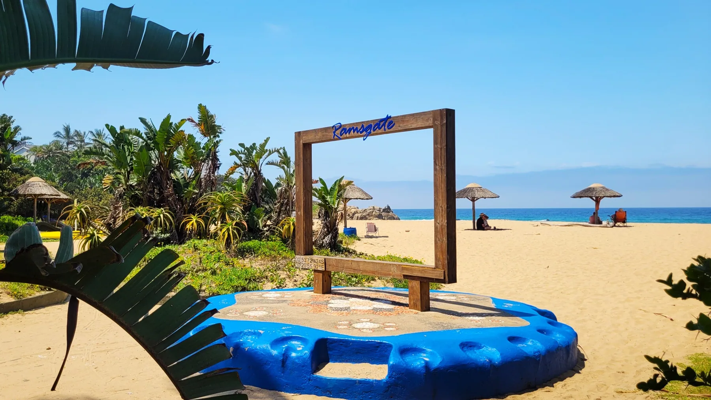
A scenic beach stop for a leisurely day by the sea.
MORE TO EXPLORE
Wildlife, surfing, sunrise walks and unforgettable coastal scenery.
Feel the energy of the Indian Ocean along the South Coast.
Keep an eye out for marine life. Whale watching is seasonal and sightings cannot be guaranteed.
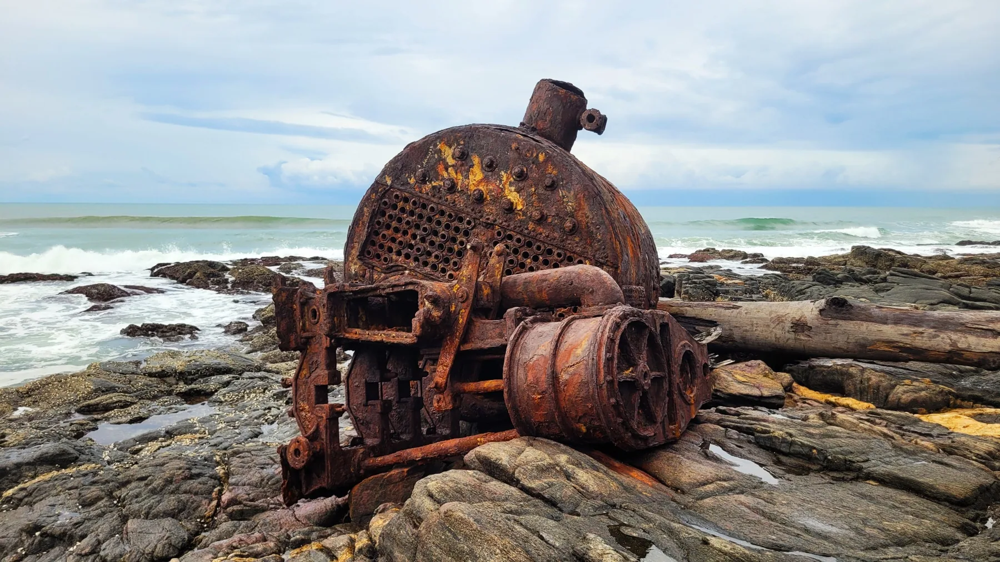
Discover fascinating relics along the rocky shoreline.
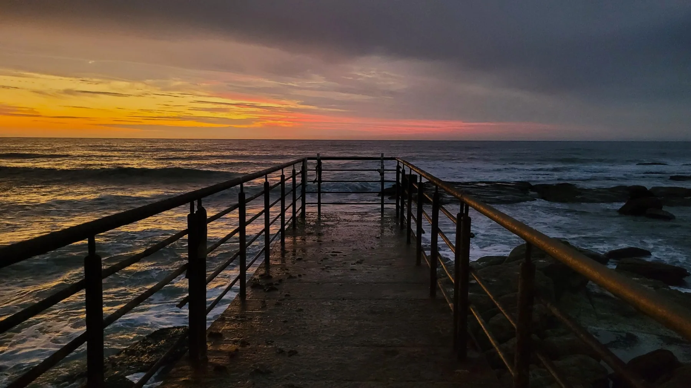
Make time for the coast's spectacular colours.
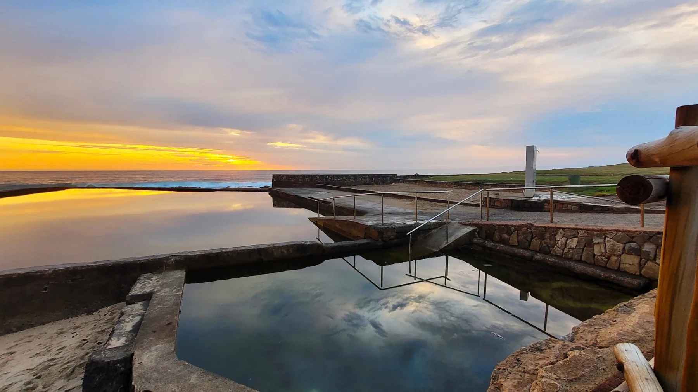
Enjoy the slower rhythm of coastal living.
Visit the butterfly sanctuary and Riverbend Crocodile Farm, or travel inland for the scenic landscapes and activities around Oribi Gorge and Lake Eland. Check attraction hours and conditions before travelling.
BEYOND THE BEACH
Discover nature, wildlife and unforgettable experiences beyond the shoreline. Plan an adventure during your stay at Driftsands 108.
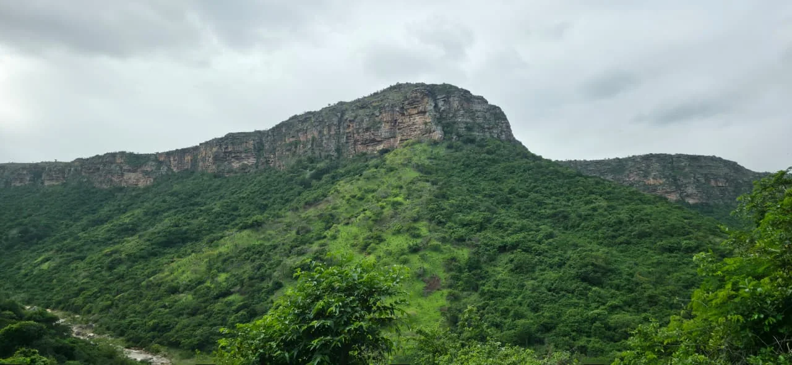
Discover dramatic cliffs, green valleys and unforgettable inland scenery.
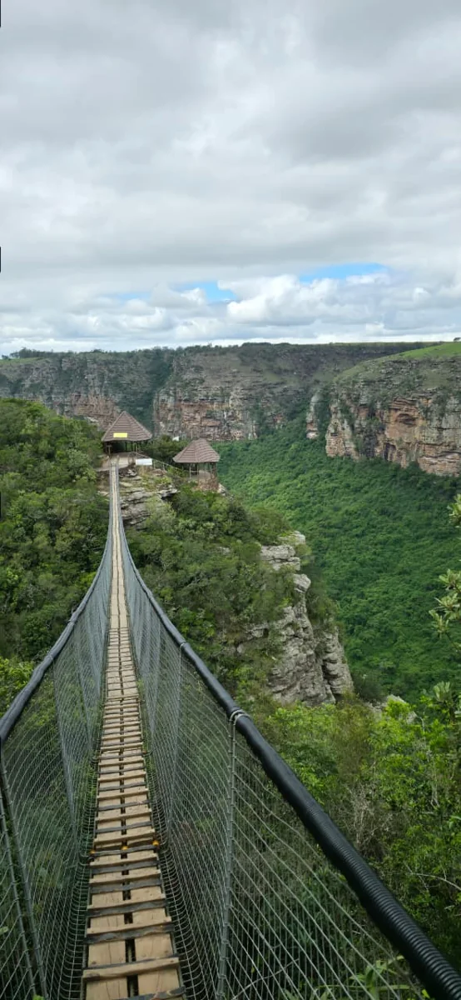
Explore sweeping gorge views, the suspension bridge and outdoor adventures.
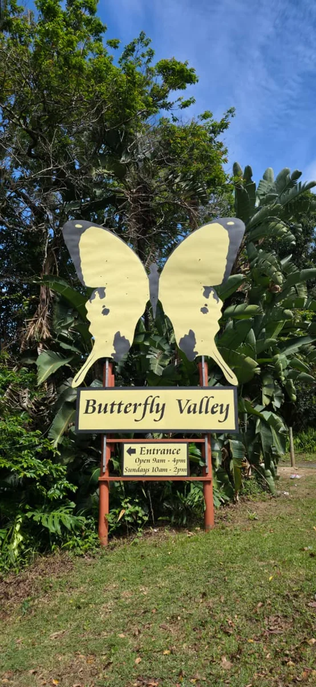
Enjoy a peaceful nature-inspired outing on the KwaZulu-Natal South Coast.
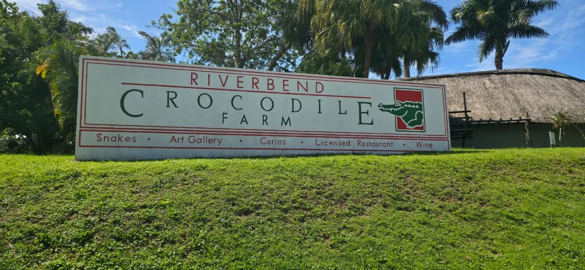
Discover crocodiles, reptiles and a fascinating family wildlife experience.
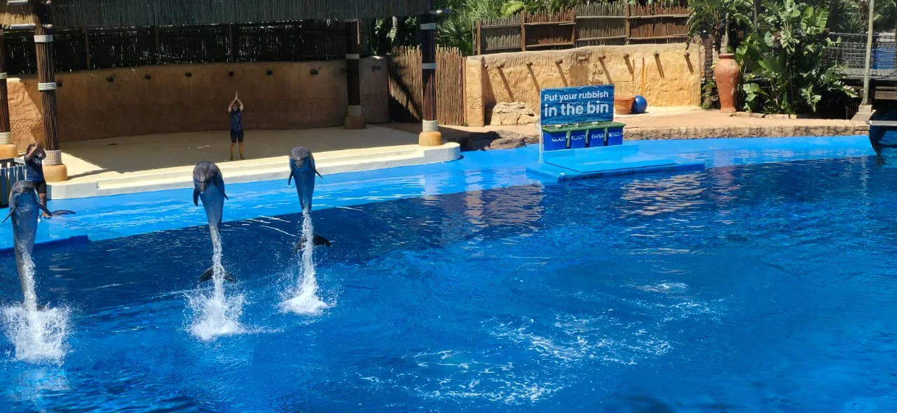
Plan a longer day trip to Durban for marine attractions and family entertainment.
Attraction opening times, activities and admission fees may change. Please check directly with each attraction before visiting. uShaka Marine World is a longer day trip to Durban.
A GLIMPSE OF YOUR GETAWAY
Explore the spaces, ocean views and facilities that make Driftsands 108 your South Coast home away from home.
OUR STORY
RSAinn Holiday Getaways offers a comfortable and relaxing self-catering experience in the heart of Uvongo. Your perfect escape for rest, relaxation and lasting memories.
PLAN YOUR COASTAL ESCAPE
Browse dates below. Live rates and availability will be enabled after the public Supabase feed is configured.
Availability sync is not yet configured. Dates and rates are hidden to avoid misleading guests. Please contact RSAinn to check dates.
Select a check-in date and then a check-out date.
QUESTIONS ABOUT YOUR STAY?
Contact us directly for more information about Driftsands 108.